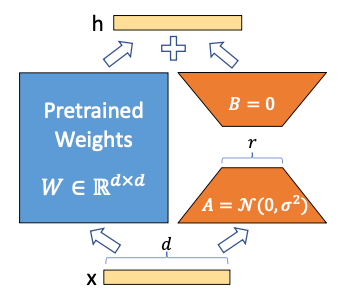
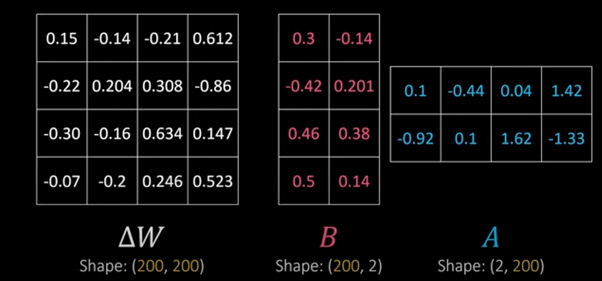
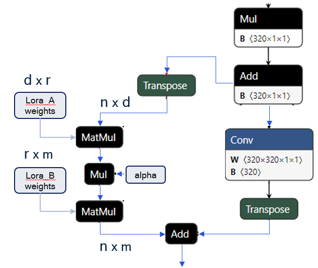
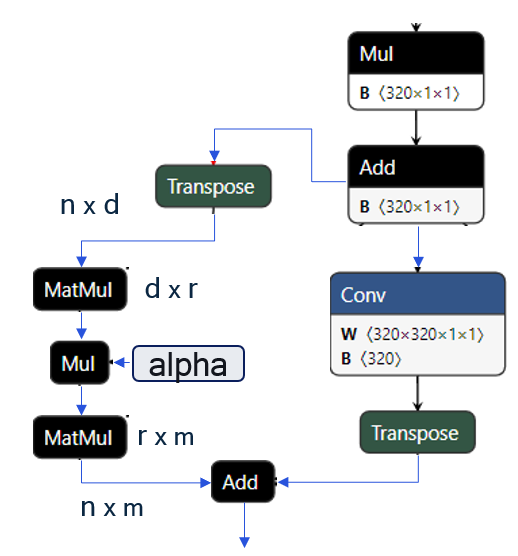
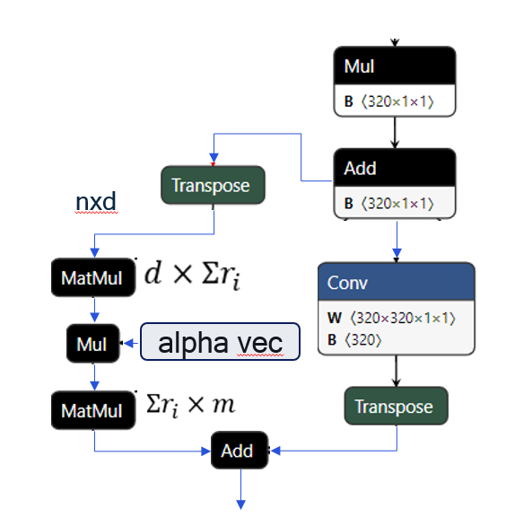

LoRA (Low Rank Adaptation)¶
Introduction¶
LoRA, also known as Low Rank Adaptation, is a fine-tune technique to further train a pretrained model by introducing low rank trainable params and keeping the trained parameters (larger dimensions) frozen.

During fine-tune training a model, LoRA branches (aka adapters) with low rank matrices are attached to the graph and train only the adapter weights and finally trained weights are stored separately (e.g., as safetensors)
For each specialized task (meaning specialized training data) the model is fine-tuned and even if the same lora branch is used for each task, it will produce different adapter weights (different safetensors file)
During inference, these task specific weights can be loaded into the adapter branches and executed for corresponding specialized tasks
Architecture:
Assume W0 with dimension d x d is pre-trained weights
When model is fine-tuned new weight W = W0 + ΔW (Note: ΔW will have same dimension d x d)
Using LoRA, ΔW is decomposed into two smaller matrices (A and B) such that
Dimension of A is d x r and dimension of B is r x d
Matrix multiplication of A and B will return d x d dimension (ΔW)
So, h = W0x + ΔWx = W0x + Abx
Further a strength α (a scalar entity with value between 0 to 1) can be added to effect of LoRA adapter weights such that ΔWx = AαBx

Reference papers:
LoRA Terminologies¶
Base-model: The original LLM, LVM, or LMM pre-trained model
Adapters: Additional model parameters and add-on architecture to be fine-tuned
Branches: augmentations to the base-model that enable adapters
Adapter Weights: populated weights on LoRA branches after fine-tuning the model
Attachment-points: Set of base-model “modules” where branches are attached to enable the adapter (also referred to as “target-modules” in PEFT world)
Strength or LoRA Alpha: Scalar multiplier applied (0-1) to each adapter (common for all attachment points), also referred to as alpha “\(\alpha\)”.
Compatible Adapters: Adapters have the same rank, attachment points
Incompatible Adapters: Adapters have different ranks, attachment points
Adapter concurrency (also termed as adapter use-case): A model configuration that specifies the base-model and two or more enabled adapters. Adapters may be trained independently, but a concurrency combines them at inference-time
Single adapter concurrency: One adapter is enabled/active
Multi-adapter concurrency: Two or more adapters are enabled/active
Quantization Encodings Flexibility
Non-updatable Encodings: All the use-cases/concurrencies share the same set of quantization encodings
All-updatable Encodings (Fully-updatable): Each use-case/concurrency has its own set of quantization encodings
Adapter-only-updatable Encodings: Across all use-cases/concurrencies, only the tensors in LoRA branch may have different encodings
Use-case/Concurrency Switch
Hot Switch: Adapter switch is achieved via changing LoRA alphas with adapter weights preloaded in RAM
Cold Switch: Adapter switch starts loading adapter weights from ROM to RAM
LoRA Solutions Feature Summary¶
QAIRT SDK (Release 2.34 onwards) supports three different generations of solutions for LoRA:
LoRAv1 – LoRA adapter weights are integrated into the graph as inputs. All use-cases share the same set of quantization encodings, referred to as non-updatable encodings. Use case or adapter switching is achieved by modifying the graph inputs.should this
LoRAv2 – LoRA adapter weights are integrated into the graph as parameters. Each use-case has its own set of quantization encodings to ensure optimal accuracy, referred to as all-updatable encodings. Adapter switching is accomplished by loading a patch to replace the adapter weights within the graph.
LoRAv3 - LoRA adapter weights are integrated into the graph as parameters. In addition to supporting legacy LoRAv1 and LoRAv2 flows, LoRAv3 supports multi-adapter concurrency and incompatible adapters (different ranks, different attachment points). Across all use cases, only the tensors in the LoRA branch may have different encodings, referred to as adapter-only-updatable. Notably, the adapter strength (alpha) is no longer a scalar but a vector instead.
The table below summarizes these differences:
Adapter Weight Solutions |
Weights as graph inputs1 |
Non-updatable encodings |
Adapter-only updatable encodings |
Full updatable encodings |
Multi-adapter concurrency2 |
|---|---|---|---|---|---|
Legacy V1 |
✓ |
✓ |
|||
Legacy V2 |
✓ |
||||
V3 |
✓3 |
✓ |
✓ |
✓ |
Notes:
1 Encodings are non-updatable
2 multi-adapter concurrency and incompatible adapter support achieved by concatenating adapters together
3 An optional hot-switch configuration for adapters (0-switch latency) is available when encodings are not updatable
The following are graphical representations to illustrate the differences
LoraV1

LoraV2

LoraV3
